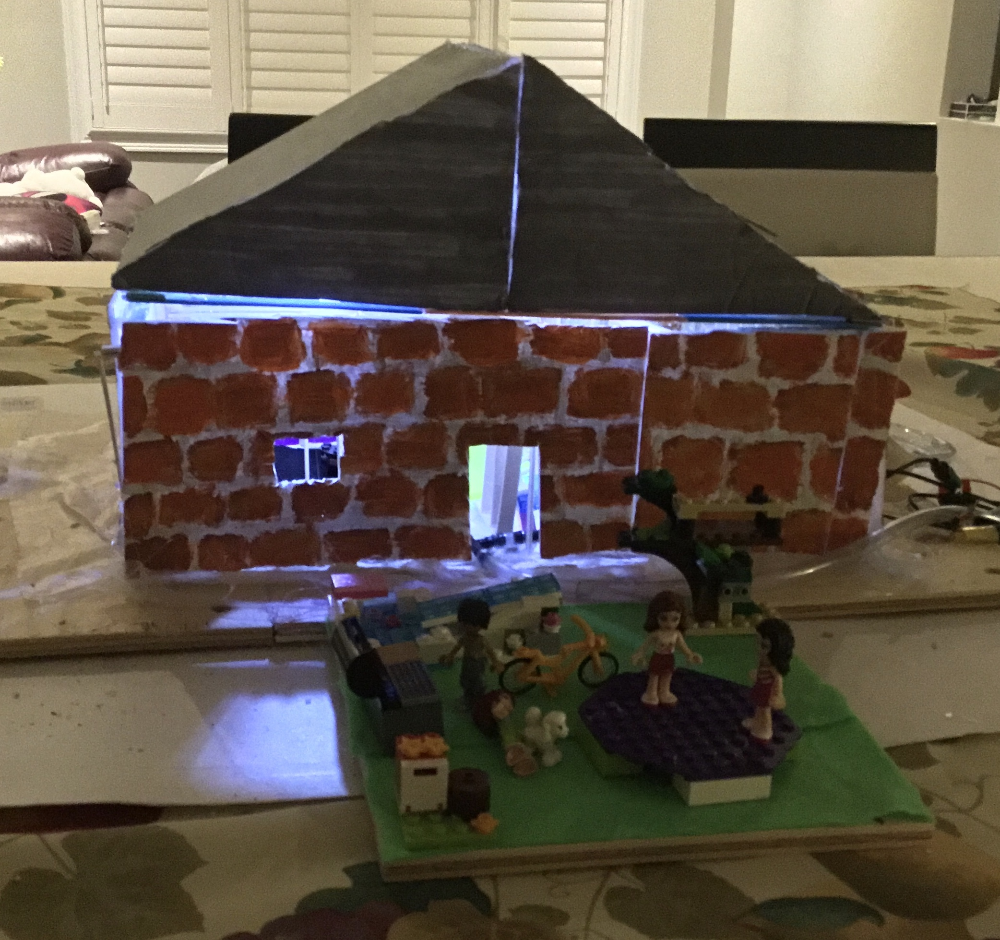
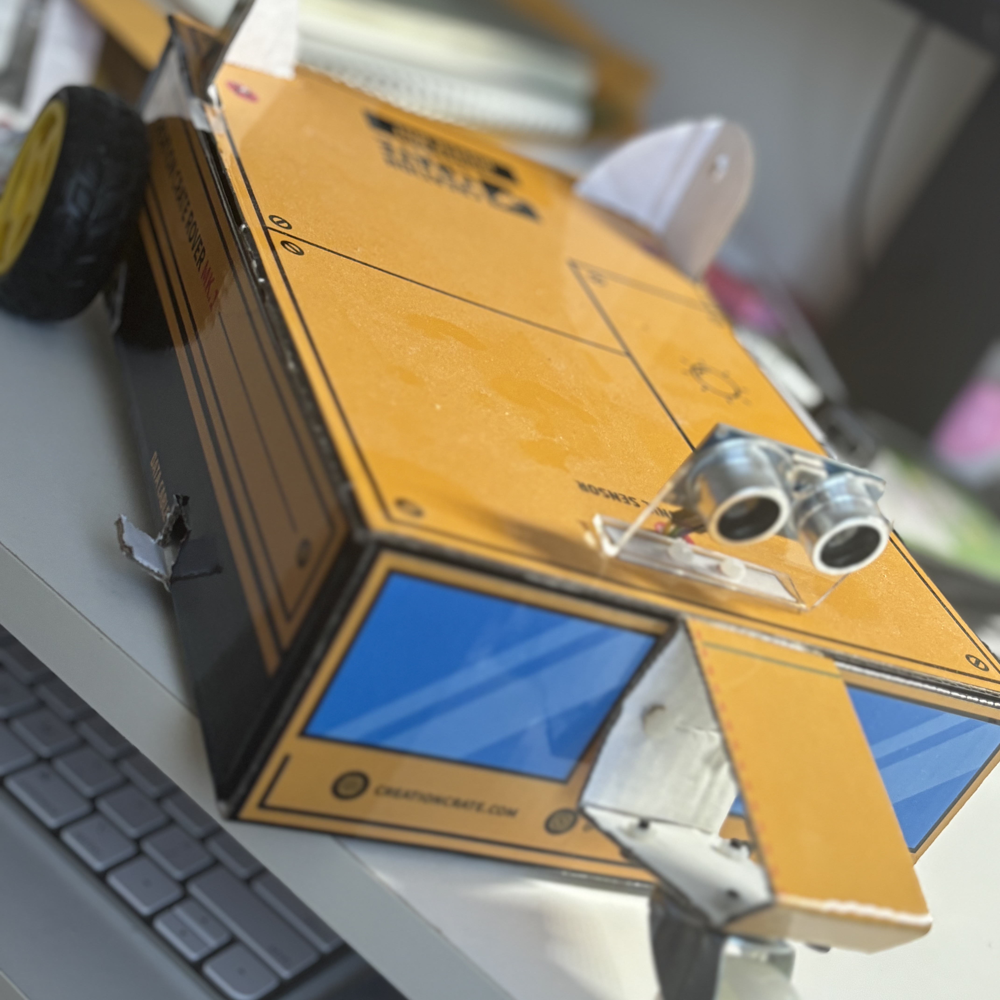

STEM PORTFOLIO
Model House
This is a mini house I made for a camp a couple years ago. I made the frame of the house with popsicle sticks and the walls with styrofoam. I then wired a lighting system and a water pipe system. Finally, I coded the different components for the house and added some visual decorations.
Rover Bot
This is a robot that I made last year for myself. It moves on its own, and when it encounters an obstacle, it changes its route. It is made of a box, wheels, a sensor and lots of wires. I put all these components together then coded what was needed as well.
Culinary Compass App
This year, I made an app called the Culinary Compass that allows users to explore different foods from around the world and also has a personality quiz feature. There is an interactive map as well, to give the user the most understanding possible. I made it for a Kode With Klossy summer camp a couple weeks ago.